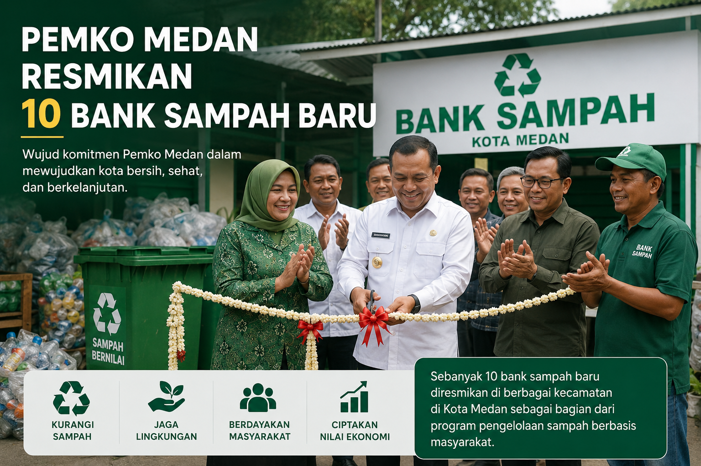
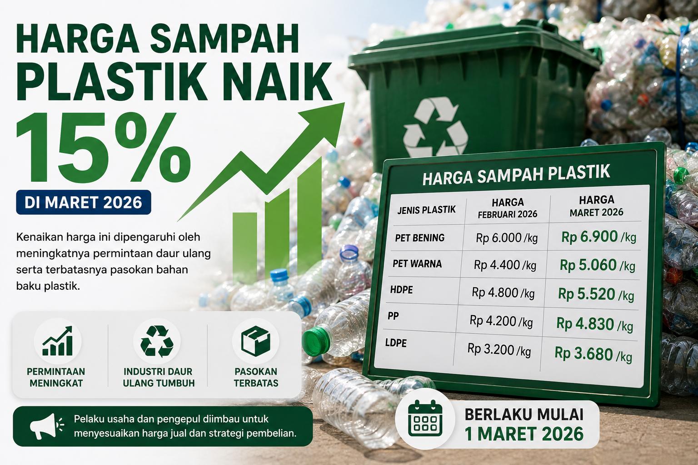
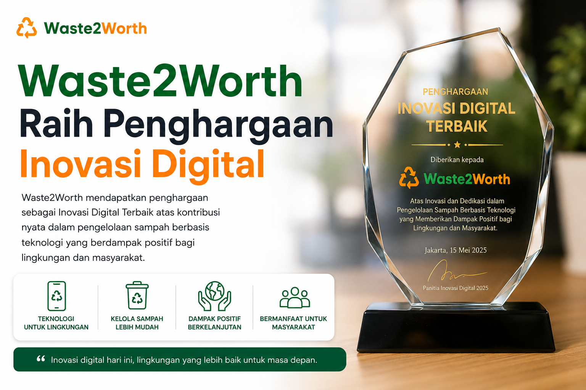

Ubah Sampahmu,
Ubah Masa Depan
Platform bank sampah digital pertama di Medan yang menghubungkan masyarakat dengan ekonomi sirkular. Dapatkan keuntungan sambil menyelamatkan lingkungan!
Lihat Dampak Sampah Terhadap Lingkungan
Simak video berikut untuk memahami pentingnya daur ulang
Video ini menunjukkan pentingnya daur ulang sampah plastik untuk menjaga lingkungan. Sampah yang kita hasilkan setiap hari dapat diolah menjadi produk bernilai ekonomi. Mari bersama-sama kurangi sampah mulai dari diri sendiri!
Fitur Unggulan
Solusi lengkap untuk pengelolaan sampah di Kota Medan
Peta Bank Sampah
Temukan 48 bank sampah di seluruh Medan dengan informasi lengkap lokasi dan jam operasional.
Cari LokasiKalkulator Nilai
Hitung estimasi nilai rupiah dari sampah Anda berdasarkan harga pasar terkini.
Hitung SekarangEdukasi & Tutorial
Pelajari cara memilah sampah dan membuat kerajinan daur ulang dari para ahli.
PelajariApa Kata Mereka?
Lebih dari 15.000 pengguna telah bergabung
"Luar biasa! Saya sudah setor sampah plastik dan kardus ke Bank Sampah Medan Barat. Prosesnya mudah dan dapat uang tambahan. Lumayan banget!"
"Fitur kalkulator nilainya sangat membantu! Saya bisa estimasi harga sampah sebelum disetor. Pengiriman tepat waktu dan ramah lingkungan."
"Konsep bank sampah digital ini revolusioner! Sampah yang tadinya tidak berguna sekarang bisa menghasilkan. Rekomendasi untuk warga Medan!"
Update Lingkungan Medan
Informasi terkini seputar pengelolaan sampah di Kota Medan

Pemko Medan Resmikan 10 Bank Sampah Baru
Pemerintah Kota Medan meresmikan 10 bank sampah baru di berbagai kecamatan.
Baca Selengkapnya
Harga Sampah Plastik Naik 15% di Maret 2026
Bank Sampah Medan menaikkan harga beli sampah plastik jenis PET hingga 15%.
Baca Selengkapnya
Waste2Worth Raih Penghargaan Inovasi Digital
Platform bank sampah digital Waste2Worth mendapatkan penghargaan inovasi terbaik.
Baca SelengkapnyaSiap Menjadi Bagian dari Perubahan?
Bergabunglah dengan ribuan pengguna di Medan yang telah berkontribusi mengurangi sampah dan mendapatkan keuntungan.
Daftar Sekarang